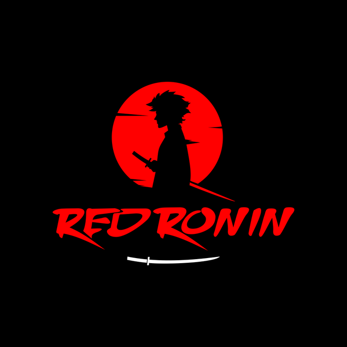

Анимэ
Анимэ сонирхогч залуусд зориулж энэхүү Web Site-г бий болгов. Танд өөрийн тань дуртай японы өв соёлыг бага ч болтугай танин мэдүүлэх зорилгоор мэдээ мэдээлэл оруулах болно. Анимэд дуртай хэн бүхэнд манай хамт олон нээлттэй
Наруто
Naruto Shippuden Орочимарүгаас найз Сасүкегээ эргүүлэн авахаар үйл явдал эхэлнэ. Харин одоо Нарутоогоос ганц шиноби нарын ч биш бүхий л ертөнцийн хувь тавилан хамаарч байна! Аймшигт 10 сүүлтээс ертөнцийг аварч чадах болов уу?
Tokyo Ghoul
Хүн идэштэн Гөүл болон хүмүүсийн нэг ертөнцөд амьдрах болно. Гөүл бол хүмүүсээр хооллогч хүн араатан гэхэд хэлсдэхгүй.
Black Clover ☘
Ид шидээс бүх зүйл хамаарах ертөнц. Хотоос алслагдмал Хажи гэх тосгоны сүмд амьдрах Юүно болон Аста гэх хоёр хүү нь анимэн гол дүрүүд юм.